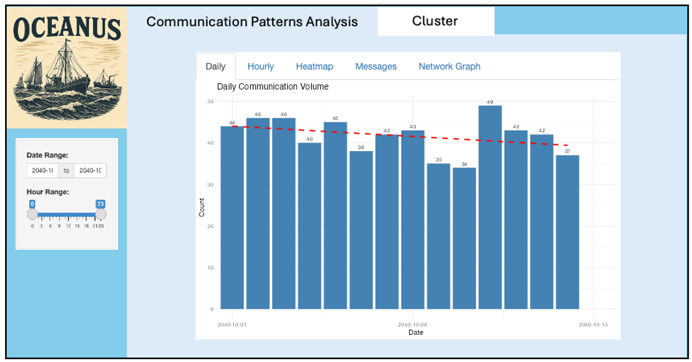
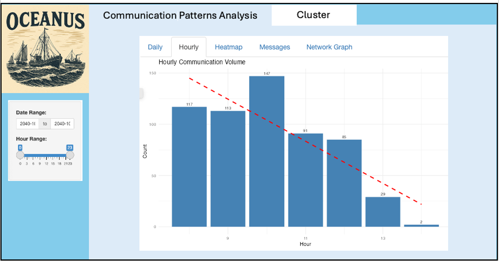
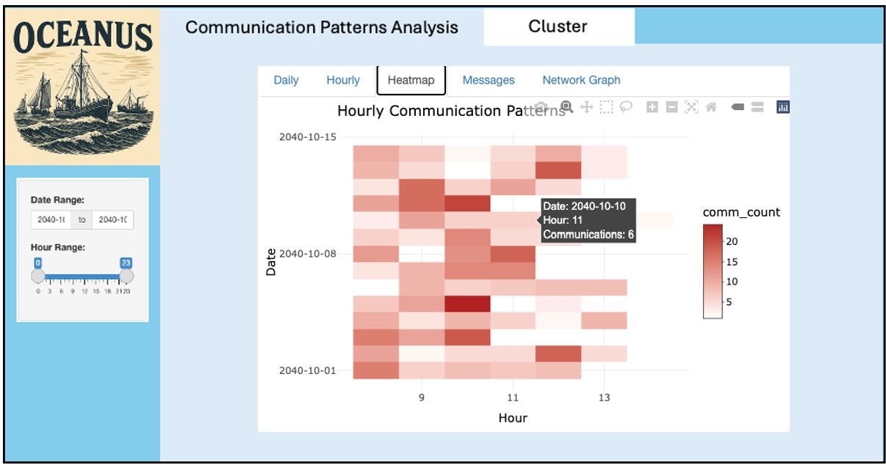
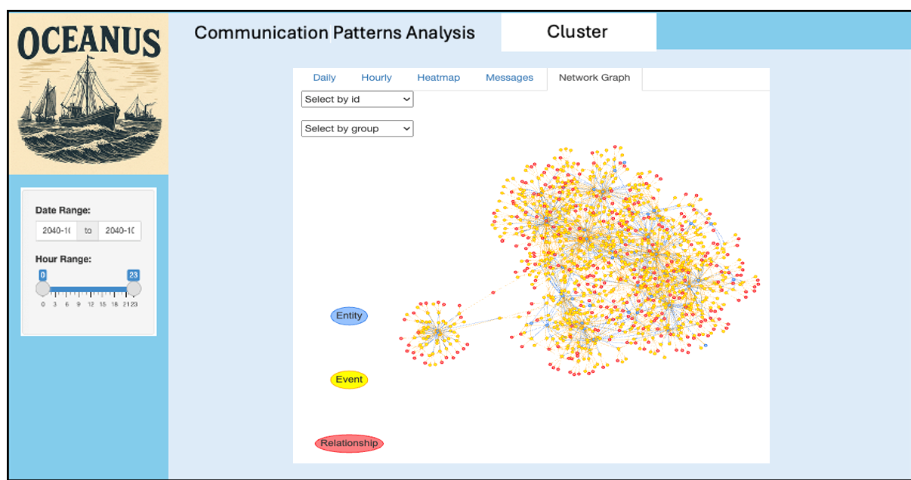
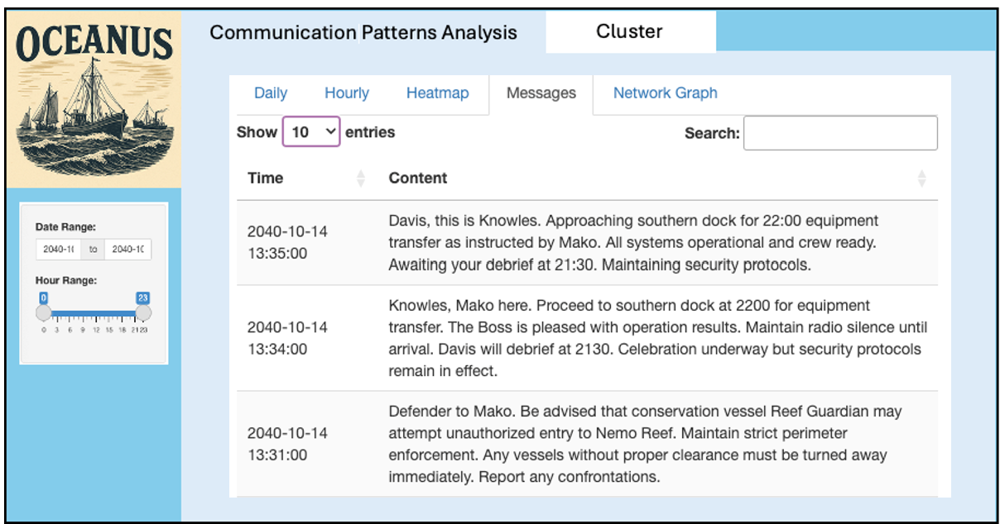
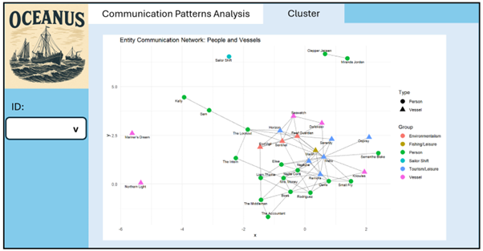
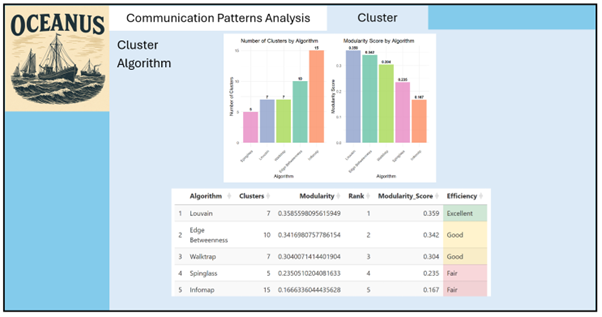

Take-Home Exercise 3 Story Board
Story Board
The aim of our Shiny application is to identify suspicious communication patterns.
The combination of the daily communication volume bar chart, hourly communication volume bar chart, and the hourly heat map is one way to detect temporal anomalies and shifts in communication behaviour.
Identifying Suspicious Communication Patterns Using Visual Analytics
The combination of the daily communication volume bar chart, hourly communication volume bar chart, and the hourly heat map provides a powerful means to detect temporal anomalies and shifts in communication behavior:

- Daily Communication Volume Bar Chart:
This chart displays the number of communications per day, overlaid with a red dashed trend line. It allows analysts to quickly spot days with unusually high or low activity, as well as to observe overall trends such as gradual increases or decreases in daily volume. A sudden spike or drop may indicate an event or coordinated action that warrants further attention.

- Hourly Communication Volume Bar Chart:
By aggregating the number of communications by hour across the dataset and plotting a trend line, this chart reveals the typical daily rhythm of communications. Significant deviations from the expected hourly pattern, such as an unusual surge in late-night or early-morning activity, can be a red flag for out-of-pattern behaviour.

- Hourly Communication Heat Map:
The heat map visualises the intensity of communications for each hour of each day, making it easy to spot recurring peaks or abrupt changes. Consistent high activity during certain hours may be normal, but a shift in these patterns, such as a new peak at an odd hour or an isolated day with unusual activity, can signal suspicious coordination or attempts to evade detection.
Together, these temporal visualizations enable analysts to:
Detect when communication patterns deviate from the established norm.
Pinpoint specific dates and hours where suspicious activity is concentrated.
Observe whether suspicious patterns are isolated incidents or part of a broader trend.
The Role of the Communication Network Graph

The communication network graph provides a structural snapshot of the network at any selected date and time. By filtering the network to a specific window (identified as suspicious via the temporal charts), analysts can:
Visualise which entities are most active or central during periods of interest.
Identify clusters, bridges, or unusually dense connections that may indicate coordinated groups or key facilitators.
Assess the scale and reach of the network at critical moments, helping to distinguish between routine communication and orchestrated events.
This graph is essential for understanding not just when, but who is involved in suspicious activity, and how information or influence flows between individuals and organisations.
A slicer has been incorporated on the left side of the dashboard, allowing users to filter all visualisations by date and time. This interactive control enables analysts to dynamically adjust the temporal scope of the data displayed, making it easier to focus on specific periods of interest and observe how communication patterns and network structures change over time

Deep Dive: The Messages Tab
Once a suspicious period is identified through the above visualisations, the messages tab allows for targeted review of the actual message content exchanged during that window. This enables:
Direct examination of the nature and context of communications, confirming whether the content aligns with legitimate business or hints at illicit coordination.
Identification of code words, unusual instructions, or references to sensitive operations.
Verification of relationships and roles among key entities, as messages often reveal hierarchy, influence, and intent.
By correlating message content with network structure and temporal anomalies, analysts can move from pattern detection to concrete evidence gathering, supporting investigations into illegal or unethical activities.
Summary
This integrated visual analytics workflow enables rapid detection of suspicious communication patterns, structural analysis of the network during critical periods, and in-depth review of message content. It streamlines the process of moving from anomaly detection to actionable intelligence, making it significantly easier to identify and confirm illegal activities and the roles of key entities involved.
Cluster
Visualization reveals the complex web of relationships in the Oceanus maritime environment around Nemo Reef. This network map serves as a digital detective board, showing how 33 key entities—both people and vessels—communicate and interact in this sensitive marine area.
The Communication Patterns:

Central Hub Activity: Kelly and Sam emerge as information brokers, maintaining connections across multiple groups—potentially serving as intermediaries between legitimate and suspicious operations.
Isolated Operations: Some entities like Northern Light and Mariner’s Dream operate with limited connections, suggesting either independent operations or intentional isolation.
Bridge Connections: Certain individuals like Nadia Conti and Liam Thorne serve as critical bridges between official channels and operational networks.
Cluster Analysis
The dashboard presents a comparative analysis of different clustering algorithms applied to the Oceanus maritime network, aiming to uncover meaningful communities among people and vessels involved around Nemo Reef.

Summary
The Entity Communication Network reveals that Nemo Reef operations exist within a complex ecosystem where environmental protection, legitimate tourism, and potentially suspicious activities intersect. The visualization provides maritime authorities with a strategic overview to prioritize investigations, enhance monitoring of key relationships, and protect both marine conservation efforts and legitimate maritime commerce while identifying threats to the reef’s ecological integrity.
The story this network tells: While legitimate conservation and tourism operations maintain their protective roles around Nemo Reef, a concerning undercurrent of potentially coordinated suspicious activities requires immediate investigative attention to preserve both maritime security and environmental protection in these critical waters.